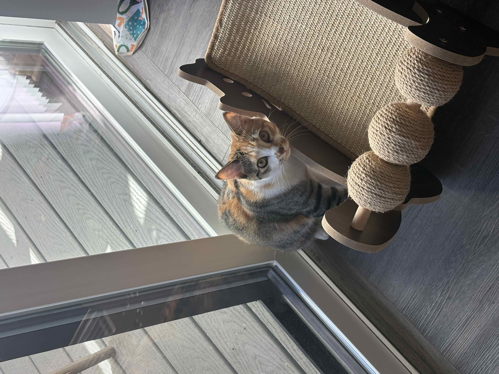
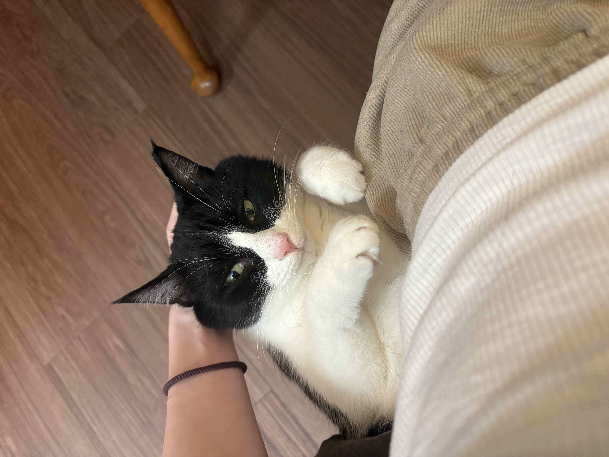

SMART FEEDER CONCEPT
The right meal for the right cat.
Our camera model recognizes Esther, Picnic, and Chewy. Connected to an automatic feeder, it could help serve each cat the food meant for them.
TRY THE CAT RECOGNIZER
Who is at the bowl?
Point your camera at Esther, Picnic, or Chewy to see the model's prediction. This webpage demonstrates recognition; it does not control a feeder.
Camera is off.
THREE CATS, THREE MEALS
A food plan for each cat



A feeder with a camera could identify the cat at the bowl and dispense its assigned food, helping prevent the cats from eating one another's meals.
For another multi-pet household, collect a new pet photo dataset, retrain the model, and set the food assigned to each pet.
THE DATA
The photo dataset
Mel and Mia each contributed 100 cat photos. Explore Mel's photos and Mia's photos. The folders identify contributors, while the model's classes identify the cats.
COMING NEXT
Demonstration video
A short recording of live predictions is being prepared.
THE REFLECTION
What the model might miss
Photos, labels, and test conditions shape every prediction. Read our project statement on dataset choices, model confidence, and the “coded gaze” in Unmasking AI.
Read the full statement →